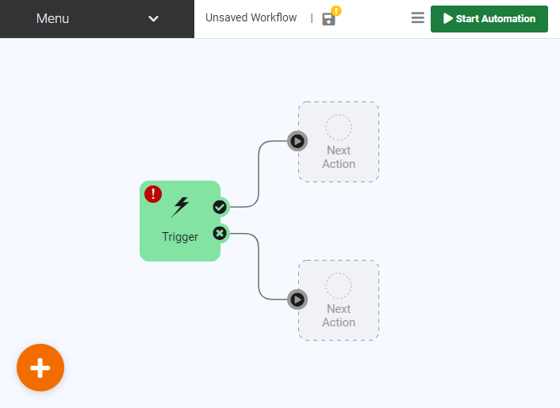
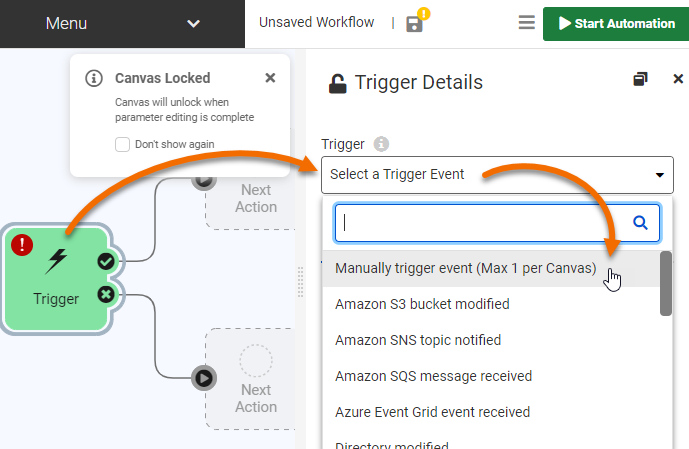
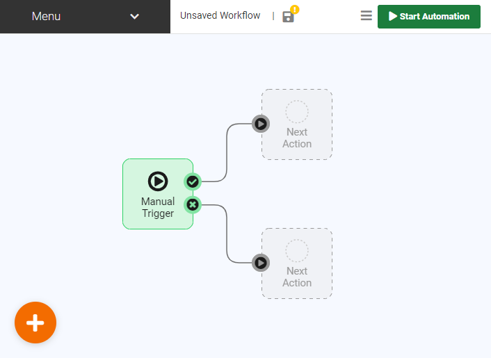
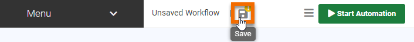
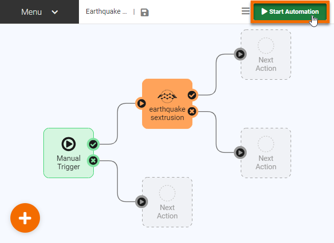
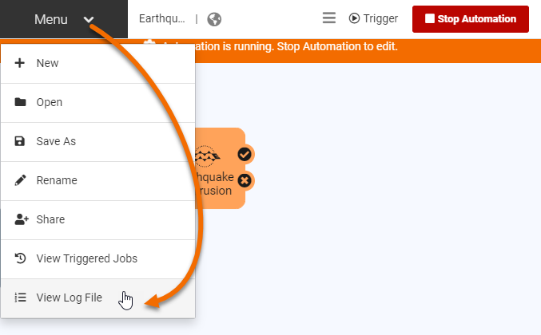
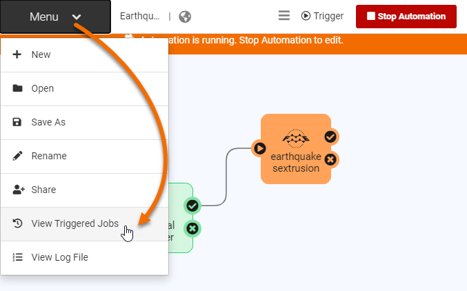
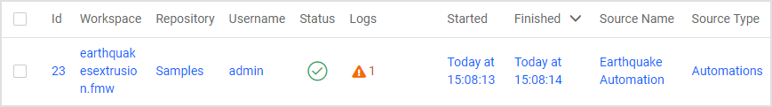

You have been tasked with creating a system to automatically generate a Google Earth KML file with a 3D visualization of recent earthquakes around the world, using data from the United States Geological Survey. Eventually, you hope to run this workspace on a schedule and in response to external triggers. But for this first iteration, you just want to test building an Automation that runs using a Manual Trigger.
To create your new Automation, the first step is to log in to FME Server.
After logging in, click Automations > Build Automation on the left-hand navigation menu:

If this is your first time building an Automation on this FME Server, the Get Started box will appear. You can click Close, as we'll explore these steps ourselves right now.
You will see a new blank Automation, with a starting Trigger and two possible Next Action objects already added:

Let's turn that starting Trigger into a Manual Trigger. Click the lightning-bolt icon on the Trigger, then click Select a Trigger Event and choose Manually trigger event (Max 1 per Canvas):

Disable Prompt for JSON on Trigger. This option lets you supply input keys for the Automation, but we don't need that ability for this Automation.
Click Apply. The Trigger will turn into a Manual Trigger:

Click the circle icon above the top Next Action block. Then click Select an action and then choose Run a Workspace:

Select the Samples repository and the earthquakesextrusion.fmw workspace. Click Apply.
The earthquakeextrusion.fmw workspace action should now appear on the canvas:

We now have a basic Automation that will run the earthquakeextrusion.fmw workspace when manually triggered. Before starting it, we need to save it. Click the Save icon:

Call your workspace Earthquake Automation and click OK:

Now that the Automation has been saved, we have to start it. Click Start Automation:

After starting the Automation, you can no longer edit it. However, you can manually trigger the Automation. Click the play button icon on the Manual Trigger to open its Details pane. Then click Trigger to manually start the Automation:

The Automation will run.
You can confirm the Automation was manually triggered by clicking the Menu, then View Log File:

You will see the Automation Log, which reports the Automation's activities. You should see a line that looks something like this:
2021-08-24T15:08:13-07:00 | 410160 : (Automations) Automation successfully triggered
A few more lines will report on the running job. If your Automation and workspace were configured properly, you should eventually see a line something like this:
2021-08-24T15:08:14-07:00 | 402623 : Job 23: Translation was successful.
We've confirmed the Automation's Manual Trigger successfully ran a Job.
You can browse or search through the Automation Log to find all the jobs triggered by an Automation. However, it can often be easier to view the list of triggered jobs directly. To do this, click your browser's back button to return to your Automation. Then click Menu > View Triggered Jobs:

This will open the Completed Jobs page automatically filtered to only show Jobs triggered by this Automation. You should see the Job you manually triggered:

Congratulations! You successfully built a simple Automation that can be manually triggered.